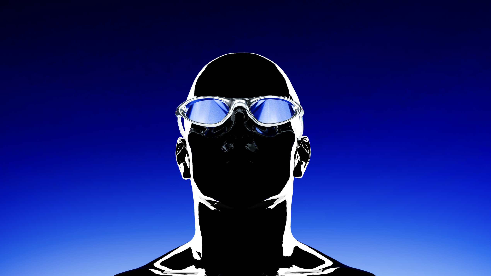
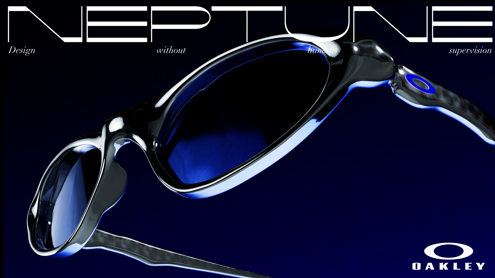
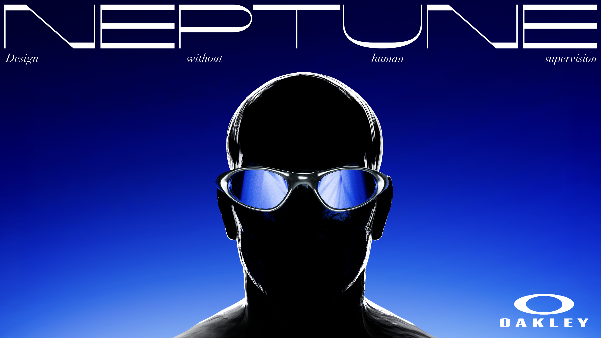
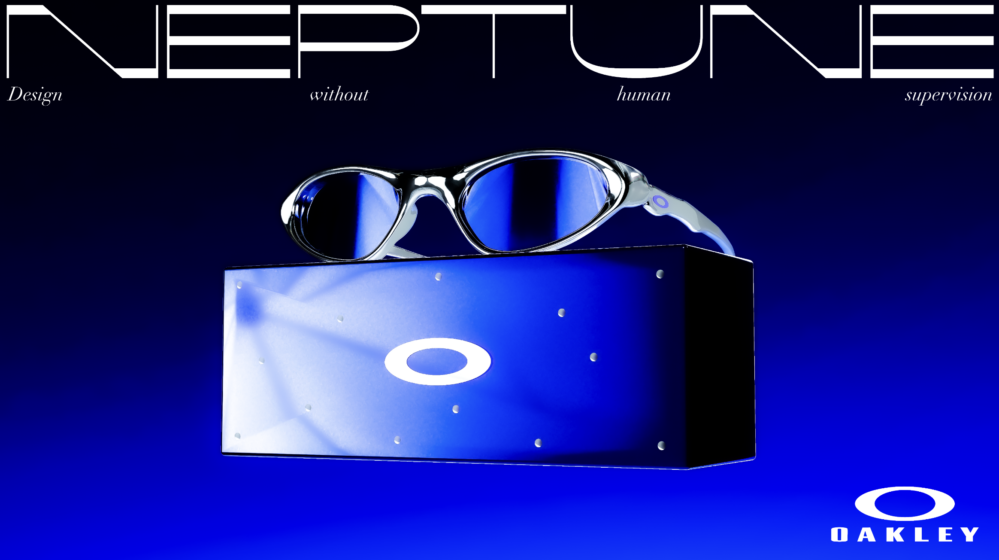
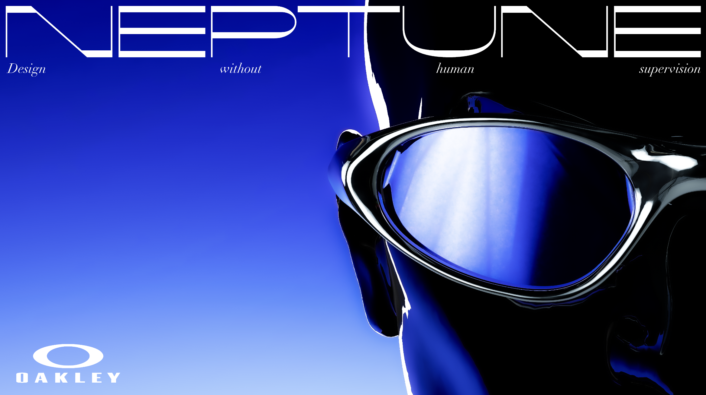
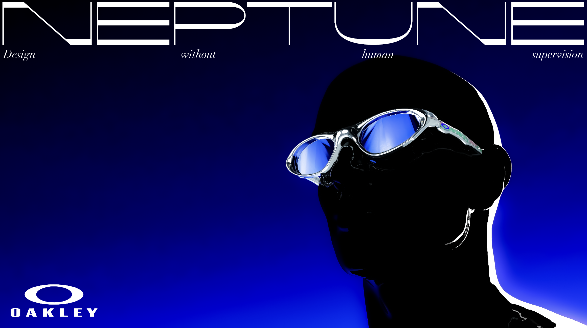
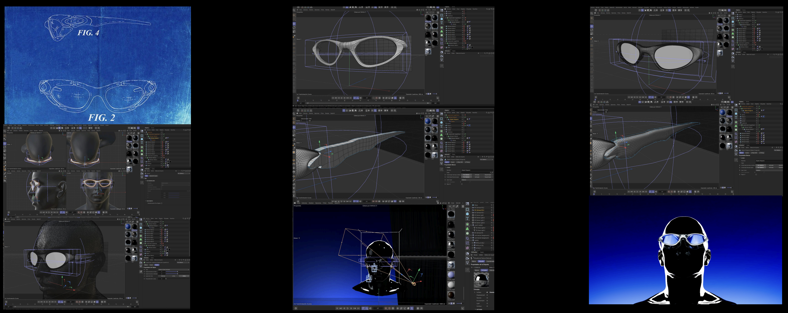
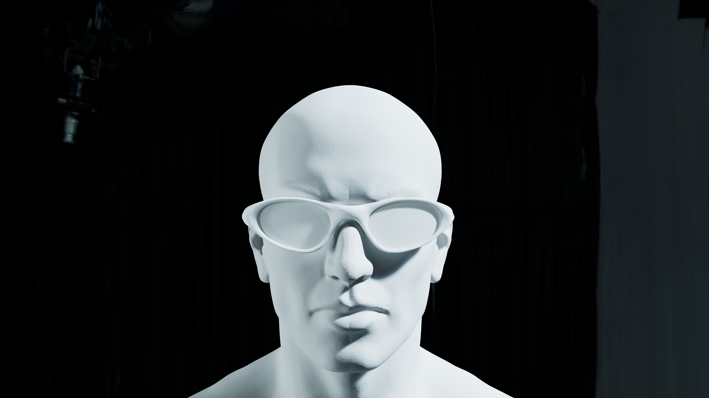

Neptune imagines a new chapter for Oakley's Mars line — swapping the heat and dust of Mars for the cold, high-pressure atmosphere of Neptune. A new pair of glasses built for the cold instead of the sun, as a fictional continuation of the brand's own universe. Design without human supervision.
Product Design · 3D





